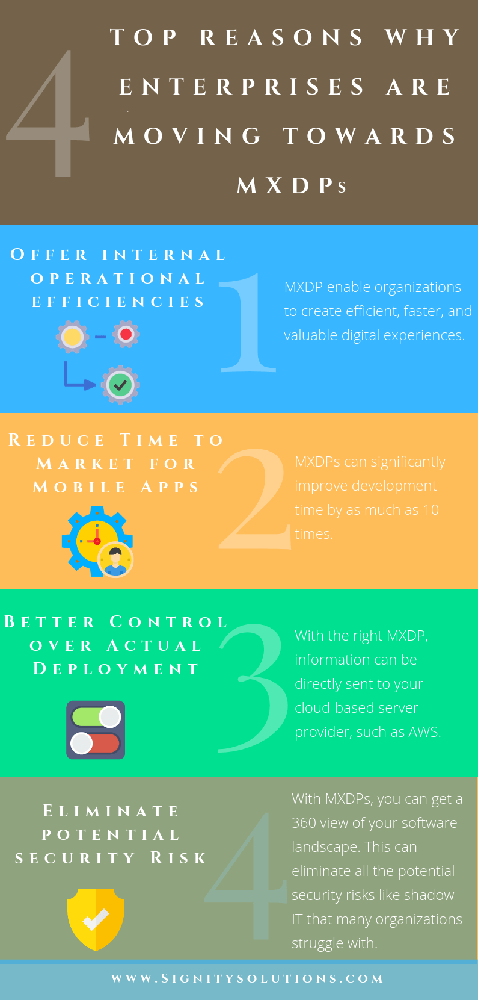

Implementing an effective digital strategy across front-, middle- and back-office IT environments is crucial to staying relevant. We help clients set strategies in motion that unify business and technology architectures, generate growth and enable competitive advantage.
Hyperautomation brings together several components of process automation, integrating tools and technologies that amplify the ability to automate work. It starts with robotic process automation (RPA) at its core, and expands automation capability with artificial intelligence (AI), process mining, analytics, and other advanced tools.The idea is to automate more and more knowledge work, and engage everyone in an organization to be part of the transformation.How is hyperautomation important for enterprises looking to scale automation much more effectively?
Why do some fear Hyper Automation?
Digitization of processes, improved connectivity with the help of the Internet, and smarter machines with artificial intelligence has led the world into an age of hyper-automation. As a result, today, the expansion of hyper-automation cannot be neglected. Though automation may sound easy and manageable in theory, its execution is tough and complicated in the real world. Hyper automation has taken the concept of automation to a level where businesses need to keep a strict vigilance. If any business would make the mistake of taking hyper automation for granted, there are high chances the business will fall out of competition. In fact, physical process companies cannot afford to not pay heed to the expansion of hyper-automation. These companies should necessarily identify the scope of automation in their business at the earliest.
The process of Hyperautomation
How Hyperautomation can be used to advantage
Hyper automation is a tremendous tool to uplift your business. Once incorporated into the business, automation can help optimize business growth in the following ways:
- Automation reduces human effort by doing a lot of work in lesser amount of time
- Automation can reduce the risk of human errors as machines are calibrated for precision
- Automation can also improve the quality of jobs by eliminating tedious, tiring, and dangerous for humans processes
- Automation leads to increased productivity and higher output
How does Hyper Automation work?
Hyper-automation goes beyond just one piece of software. As such, it entails that businesses adopt tools that can be set up to work with one another. The case for interoperability, or the ease at which software can communicate with one another, is now more critical than ever.
Not only will you want single software solutions that are easy-to-use and scalable, but you will also need to consider how the addition of a tool will work with your existing methods of operating. You’ll want to introduce tools that are “plug and play” solutions, which can pull data from different sources and can use APIs to talk to your existing software.
However it's more than Automating Tasks
Hyper-automation does not just refer to implementing tools to manage tasks. It requires collaboration between humans, as well. This is because humans are vital decision-makers and can use the technology to interpret data and apply logic.
For example, let’s imagine the case of social media and customer retention. A business can rely on tools that leverage RPA and machine learning to produce reports and pull data from social platforms to attain customer sentiment. As such, reports will be generated, and there will be information readily available for the marketing team. But, it will then require that the marketing team uses these insights to consider what type of campaigns, promotions and incentives to incorporate into a business plan to hold onto satisfied customers and attempt to salvage those who feel dissatisfied.
What is Multiexperience?
Multi-experience development platforms (MXDPs) help enterprises to rapidly scale their applications across a range of devices and platforms. MXDPs can help you develop a single application that can be deployed on a variety of devices. This greatly shortens down your efforts and gives brands more control over their digital experiences.
Buyers in the market are looking to address the challenge of building and delivering a sizable portfolio of mobile apps for customers, partners, and employees.
They now are looking for complete user experience. It is no longer enough for them to simply interact with a mobile app or web application.
In short, multiexperience is about adapting to the increasing market of different devices and their respective experiences. Applications now need to run on different platforms and adapt easily, all while providing a consistent experience from a business perspective.
Why is this relevant? For one, it’s because a few companies are already doing it and, for another, it’s because the average individual currently owns 3.2 different devices. In other words, it’s becoming the increasingly expected norm.
Reasons Why Enterprises are Moving Towards MXDPs

1. Offer internal operational efficiencies
MXDPs help enterprises to support a large number of internal operations in a single space. With every process being present in one system, processes can be easily streamlined. MXDP enables organizations to create efficient, faster, and valuable digital experiences.
2. Reduce Time to Market for Mobile Apps
MXDPs can significantly improve development time by as much as 10 times. All because of the reusable code and streamlined design processes. And with faster releases, feedback cycles can also be shortened. This helps in creating and honing your digital experiences.
3. Better Control over Actual Deployment
It takes a week to conduct a single cloud-based deployment. But with the right MXDP, information can be directly sent to your cloud-based server provider, such as Amazon Web Services. Plus, MXDPs are also going to provide a full-distributed environment on your behalf. Providing more efficiency by streamlining the deployment process.
4. Eliminate potential security Risk
With your application feeding on a single platform like MXDPs, you can get a 360 view of your software landscape. This can eliminate all the potential security risks like shadow IT that many organizations struggle with.
Barriers in Multi-experience Development
The biggest barrier in building a multi-experience development platform is aligning the IT and the business experience. And more than 45% have recognized the lack of the skills of developers to build a fine multi-experience is a major barrier to project completion.
“The skills gap with emerging technologies cannot be overstated when discussing inhibitors for scaling up digital initiatives, including the multi-experience development strategy,” says Jason Wong, Vice President, Research, Gartner.
What is a Distributed Cloud
A distributed cloud refers to having computation, storage, and networking in a micro-cloud located outside the centralized cloud. Examples of a distributed cloud include both fog computing and edge computing. Establishing a distributed cloud situates computing closer to the end user, providing decreased latency and opportunities for increased security. Potential security solutions include a blockchain-based security architecture or random auditing of data to check for integrity. A distributed cloud also processes data in real-time.
An example of a distributed cloud infrastructure
Overview
The traditional cloud computing model offers on-demand, metered access to computing resources—storage, servers, databases, and applications—to users who do not want to build, buy, or run their own IT infrastructure. Public cloud service providers maintain and run large server farms whose resources are shared between users, with virtualization techniques that provide isolation and security of individual user data. Site redundancy across regions provides for recovery from outages and disasters, with all the monitoring and management aspects of keeping the cloud up and running transparent to cloud users.
While distributed computing spreads computation workload across multiple, interconnected servers, distributed cloud computing generalizes this to the cloud infrastructure itself. A distributed cloud is an execution environment where application components are placed at appropriate geographically-dispersed locations chosen to meet the requirements of the application.
Such requirements include:
- Location: to enable more responsive and performant service delivery for certain types of applications, where latency is critical and bulk data transfer to and from a central cloud is expensive.
- Regulations: which may require that data never leaves the user’s country, as is the requirement in the EU.
- Security: to ensure that certain data and processes remain within an enterprise’s private cloud or data center, with which a public cloud is integrated.
-Redundancy: beyond that provided by local, regional, or national site redundancy to mitigate large scale outages that can affect enterprises.
Why Does Cloud Make Sense for You?
You may not realize that you use the cloud everyday, but social media and email platforms use the cloud technologies extensively. Consider this in regards your social media accounts. You keep a profile of information which you can manipulate, add to or delete from. However, the data is not located in your home, but on a remote server shared with thousands of other individual users.
Applying this method to your business, you can house your information and data on an offsite server which is managed and protected by a third party provider. Distributed cloud computing from a managed services provider (MSP) is beneficial for many reasons.
- The MSP has deep expertise, dedicated to making sure that technology advancements are implemented
- The MSP monitors continually for cyber threats and criminal activity.
- Your company can share the cost of hardware and software upgrades with other organizations.
- Your company does not pay for more infrastructure than it actually needs.
- Distributed computing (data in multiple remote locations) inherently provides a disaster recovery mechanism, and prevents your organization from losing data should the facility be destroyed.